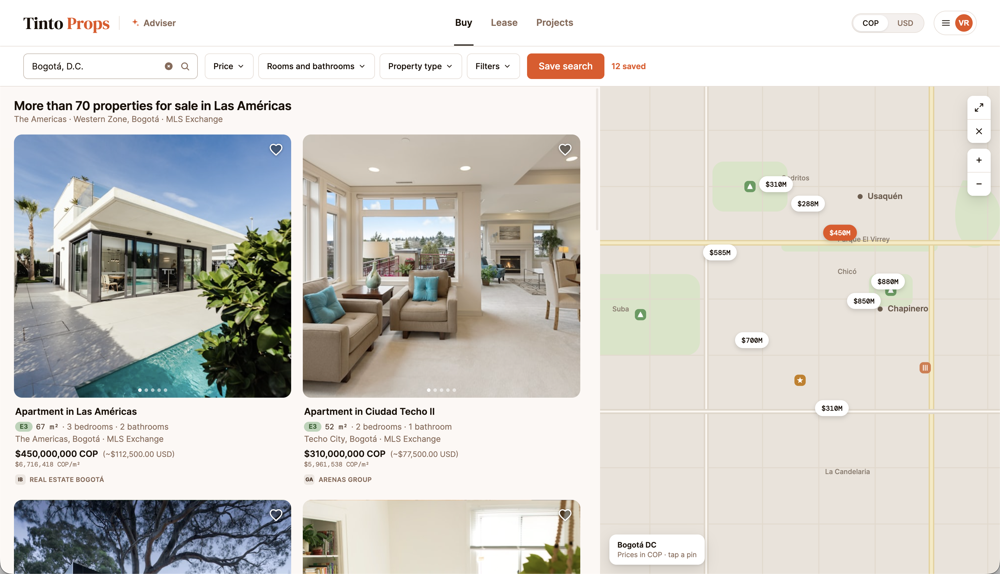

Designing real-estate discovery around buyer intent
Local and international buyers enter the same Colombian market with very different language, currency, knowledge, and confidence. I designed TintoProps as a conversational property experience that begins with what the buyer is trying to accomplish — instead of forcing everyone through the same filters.

Intent before filters — the home screen opens on the buyer's goal, not a wall of search fields. Say what you're trying to do; the experience takes it from there.
Portals assume the buyer already knows
Traditional portals assume the buyer already understands the market — and already knows how to express the right search criteria.
An international buyer arriving in Colombia doesn't know the neighborhoods, the price norms, or what a listing even means in local terms. A local buyer knows the city but still has to translate a life decision — budget, commute, family, investment — into bedrooms, bathrooms, and square meters before the site will talk to them.
Listings without enough local explanation — photos and specs, but no sense of what the area means.
Rigid filters that demand inputs before understanding the decision behind them.
Language and currency differences that make every number and description harder to trust.
International buyers navigating without local context — and no one explaining it.
Handoffs to another channel that lose the relationship history just when a professional gets involved.
AI assumptions that could quietly mislead if they were never confirmed.

The conversational entry point — discovery starts with the buyer's goal in their own words, not a filter panel.
The reframe
The question wasn't "how do we build a better search page?" It was: what would it feel like to arrive in an unfamiliar market with a trusted local advisor beside you — someone who listens first, explains what you don't know, and checks before assuming?
Property discovery should behave more like a trusted local advisor.
The experience understands intent, explains unfamiliar context, makes careful inferences, confirms the important assumptions, and keeps the conversation as part of the relationship — all the way to the human professional.
A designed handoff
- Understanding buyer intent from natural conversation
- Translating language and currency context as the buyer moves
- Explaining unfamiliar local concepts and tradeoffs
- Maintaining conversational memory across the discovery
- Guiding navigation instead of demanding filter inputs
- Confirming preferences the system inferred
- Financial judgment — budget, risk, and what a home is worth to them
- The final selection, never auto-decided
- Engagement with local professionals, with full context carried over

Place before property — the map gives every listing a location the buyer can actually read, with local context attached instead of bare pins.
Conversation as navigation
Instead of attaching a chatbot to a listing portal, I made conversation part of navigation. Every step of the discovery follows from what the buyer is trying to do.
The experience begins with the buyer's goal — relocate, invest, find home — before any search control appears.
Preferences surface through natural conversation, not a form. The buyer describes; the system structures.
Language and currency travel with the buyer across the whole discovery — never re-entered, never dropped.
Unfamiliar concepts and tradeoffs get explained in place — neighborhoods, norms, and what a price really means.
The interface responds to what the buyer is trying to do right now, instead of asking them to learn the site's structure first.
Important inferences are confirmed with the buyer before they steer anything — an assumption is a question, not a fact.
When a human professional enters, the full conversation history comes along — the buyer never starts over.

Intent taking shape — preferences emerge from guided conversation, and the system confirms what it heard before acting on it.
Confirmed, not assumed
A system that infers budget, neighborhood fit, or readiness from a few messages can quietly steer a buyer wrong — in a language they may only half read, in a currency they can't yet feel. So I treated every important inference as a checkpoint: the experience shows what it understood, in the buyer's language and currency, and asks before it proceeds.
Localization isn't a toggle on a settings page. It's the product holding both worlds — Spanish and English, pesos and dollars — so neither buyer has to do the conversion in their head.

Both worlds at once — language and currency context carried through the conversation, so local and international buyers read the same market with equal confidence.
What changed
The design moves property discovery from form-first filtering toward a guided decision experience. The interface responds to intent and context instead of requiring the buyer to understand the site's structure before they can begin.
A buyer who doesn't know the market can still begin — and a buyer who does is never slowed down by the guidance.

A listing that explains itself — the property shown with the local context a buyer needs to judge it, not just specs to decode.
What exists today
TintoProps is pre-launch. The product concept, conversational navigation model, buyer-context model, localization strategy, and adaptive interface behavior are designed; the experience described here is the design intent, not a shipped outcome.
I make no claims about adoption, conversion, market leadership, or business impact — those will need independent evidence once the product is live.

Nothing lost in the handoff — the preserved conversation travels with the buyer to the local professional, so the relationship continues where discovery left off.
What this taught me
Conversation can be navigation. When the dialogue itself carries intent, memory, and next steps, the buyer never has to learn the site's structure to move forward.
Localization is a trust decision. Language and currency aren't preferences — they're the difference between a buyer who understands and one who guesses. The product must hold both.
Inference needs a confirmation state. A careful guess presented as fact is how AI misleads. Making assumptions visible and confirmable is what keeps a guided experience honest.
The handoff is part of the product. Discovery that evaporates when a professional enters isn't a relationship — it's a demo. Preserving the conversation is what turns guidance into continuity.
TintoProps applies the operating principles behind Seamless Agent OS to property discovery: intent guides the work, context persists across the whole conversation, inferences stay visible until confirmed, and the consequential moments stay with the person. Where Agent OS coordinates a fleet of workers, TintoProps guides one buyer through an unfamiliar market — both keep the human on the decision.